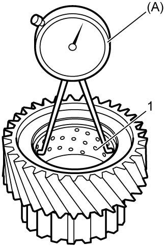
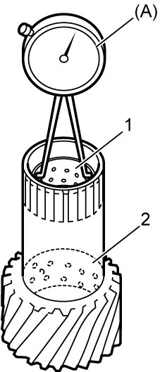
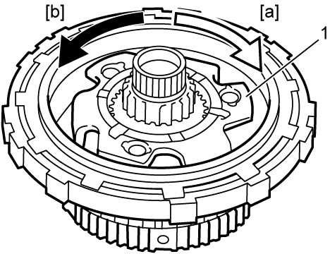

5A
| Rear Planetary Gear Assembly and One-Way Clutch Assembly Related Parts Inspection |
Rear Planetary Sun Gear No.1
Using special tool, measure inside diameter of rear planetary sun gear No.1 bushing (1).
If check result is not as specified, replace rear planetary sun gear No.1.
Rear planetary sun gear No.1 bushing inside diameter
Standard: 29.886 to 29.912 mm (1.1767 to 1.1776 in.)

 "Expand image")
Rear Planetary Sun Gear No.2
Using special tool, measure inside diameter of rear planetary sun gear No.2 bushings.
If check result is not as specified, replace rear planetary sun gear No.2.
Rear planetary sun gear No.2 front bushing inside diameter
Standard: 23.934 to 24.015 mm (0.9423 to 0.9454 in.)
Rear planetary sun gear No.2 rear bushing inside diameter
Standard: 23.955 to 24.015 mm (0.9432 to 0.9454 in.)

 "Expand image")
| 1. | Front bushing | 2. | Rear bushing |
One-Way Clutch
Ensure rear planetary gear (1) rotates only in clockwise direction [a], never in counterclockwise direction [b].
If planetary carrier rotates both ways or does not rotate either way, one-way clutch assembly will need to be replaced with new one-way clutch assembly.

 "Expand image")